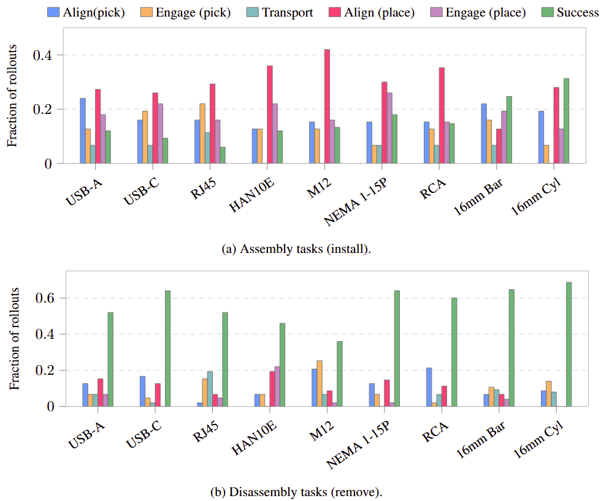

Paired failure data
2,160 bi-manual real-robot trajectories: 1,080 expert demonstrations paired with 1,080 recovery episodes, each annotated with the phase of failure induction and a categorical failure mode.
Robot learning policies fail in characterizable ways: they stall at high-uncertainty states, drift during contact-rich alignment, and miss targets by millimetres on precision tasks. Yet training datasets consist almost exclusively of successful demonstrations, and real-world benchmarks typically collapse performance into binary success. This disconnect leaves policies without supervision for recovery behaviours and leaves researchers without the resolution needed to localize and analyze failure over long horizons. We introduce REBOOT (Recovery Episode Benchmark for Off-nominal Trajectories), the first bi-manual robot manipulation benchmark designed around failure as a first-class signal. REBOOT comprises 2,160 demonstrations across 18 precision assembly tasks, each decomposed into a shared five-phase sequence — Align(pick) → Engage(pick) → Transport → Align(place) → Engage(place) — enabling per-phase progress evaluation beyond terminal success. Failures are systematically introduced at each phase and paired with expert recovery trajectories that return the system to a valid continuation state. Each task is annotated with structured metadata encoding mechanical sources of difficulty: mating interfaces are labelled by rotational symmetry class (continuous, C2, or C1), geometric precision tier based on engagement clearance, and assembly direction via matched install–remove pairs. Failure episodes are annotated by phase of occurrence and categorical failure mode (e.g., misalignment, jamming, premature release), enabling fine-grained attribution of failure to kinematic phase and tolerance violation. All data are collected with synchronized RGB-D observations from four fixed camera viewpoints. Each phase is further accompanied by grounded natural-language outcome descriptions characterizing both success and failure conditions (e.g., stalling in free space, misaligned grasp, insertion jamming), providing supervision for vision-language recovery policies. Half the dataset consists of expert demonstrations; the other half consists of recovery-from-failure demonstrations sampled to match the empirical failure distribution of imitation-learned policy rollouts. We benchmark action-chunked transformer, diffusion, and $\pi_0$-FAST policies using per-phase completion rates, revealing architecture-specific failure points invisible under binary evaluation.
success lane failure recovery lane

Imitation-learned policies stall at high-uncertainty states, drift during contact-rich alignment, and miss targets by millimetres. Training datasets, however, consist almost exclusively of clean, successful trajectories, and real-world benchmarks collapse performance into binary success. This leaves policies without supervision for recovery behaviours and researchers without the resolution to localize failure over long horizons.
The limitation is stark in precision assembly. Consider inserting a USB-A connector with 0.62 mm of engagement clearance. A policy trained only on successes has no exposure to mid-task deviation: arriving at alignment with a lateral offset exceeding the port clearance, it drives forward rather than retracting. The housing catches on the port rim, yaws under contact force, and jams irreversibly. What the policy needs, but was never shown, is a recovery trajectory: retract, re-align, re-approach.
REBOOT records that recovery. Half the dataset consists of expert demonstrations; the other half consists of recovery-from-failure demonstrations, sampled to match the empirical failure distribution of imitation-learned policy rollouts.
2,160 bi-manual real-robot trajectories: 1,080 expert demonstrations paired with 1,080 recovery episodes, each annotated with the phase of failure induction and a categorical failure mode.
A common five-phase sequence with annotated phase boundaries across all 18 install and remove tasks, enabling cross-task failure analysis and recovery transfer.
Each task is annotated with rotational symmetry class, engagement-clearance tier, and install and remove pairs, supporting attribution of failure to mechanical tolerance.
Per-phase failure recorded across ACT, Diffusion Policy, and Pi0-FAST, used to calibrate the expert-to-recovery proportion rather than assuming a uniform mix.
The suite is built as an extension of NIST Assembly Task Board #1 and comprises nine manufacturing-relevant objects spanning a range of geometric complexity, engagement tolerance, and rotational symmetry. Each object appears in both an install and a remove variant, yielding 18 tasks. Engagement clearances range from an interference-fit RCA connector at 0 mm to a loose HAN 10E connector at 2.73 mm.
| Object | Mechanism | Symmetry | Tier | Clearance |
|---|---|---|---|---|
| RCA | Peg-in-hole | Cont. | Interference | 0.00 mm |
| 16 mm cylinder | Peg-in-hole | Cont. | Moderate | 0.20 mm |
| M12 fastener | Threaded | C2 | Moderate | 0.70 mm |
| USB-C | Peg-in-hole | C2 | Tight | 0.09 mm |
| 16 mm bar | Peg-in-hole | C2 | Moderate | 0.20 mm |
| NEMA 1-15P | Peg-in-hole | C1 | Moderate | 0.50 mm |
| RJ45 | Peg-in-hole | C1 | Tight | 0.13 mm |
| USB-A | Peg-in-hole | C1 | Moderate | 0.62 mm |
| HAN 10E | Peg-in-hole | C1 | Loose | 2.73 mm |
Cont. any rotation valid C2 two valid orientations C1 one valid orientation
60 teleoperated demonstrations per task were collected with a bi-manual Trossen WidowX AI robot, with proprioception data and RGB-D observations from four fixed viewpoints: overhead, front-facing, and one per wrist, recorded at 30 Hz. Below, expert executions are shown alongside recovery episodes for the same task.
of installation-task failures occur in Align(place) and Engage(place), two of five phases. The Transport phase accounts for 8%.
mean rollout success from install to remove. Extraction is largely a free-space pull; insertion couples grasping with sub-millimetre alignment.
Engage-phase failure rates for Continuous, C1, and C2 symmetry. Keyed connectors must resolve yaw before insertion.

@article{oforiampofo2026reboot,
title = {REBOOT: From Failure to Recovery: A Dataset and
Benchmark for Bi-Manual Precision Assembly},
author = {Ofori-Ampofo, Nana Yaw Owusu and
Ebrahimi Kahou, Samira and Thekinen, Joseph},
journal = {arXiv preprint},
year = {2026},
url = {https://nanayawoa.github.io/REBOOT/}
}